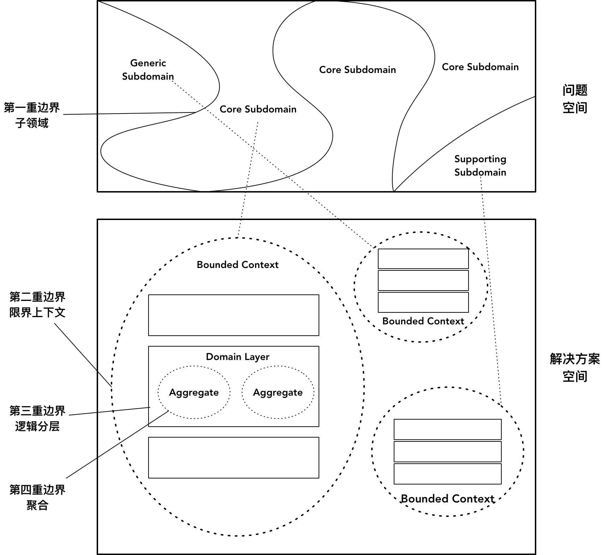

- 001 「战略篇」访谈 DDD 和微服务是什么关系？.md.html
- 002 「战略篇」开篇词：领域驱动设计，重焕青春的设计经典.md.html
- 003 领域驱动设计概览.md.html
- 004 深入分析软件的复杂度.md.html
- 005 控制软件复杂度的原则.md.html
- 006 领域驱动设计对软件复杂度的应对（上）.md.html
- 007 领域驱动设计对软件复杂度的应对（下）.md.html
- 008 软件开发团队的沟通与协作.md.html
- 009 运用领域场景分析提炼领域知识（上）.md.html
- 010 运用领域场景分析提炼领域知识（下）.md.html
- 011 建立统一语言.md.html
- 012 理解限界上下文.md.html
- 013 限界上下文的控制力（上）.md.html
- 014 限界上下文的控制力（下）.md.html
- 015 识别限界上下文（上）.md.html
- 016 识别限界上下文（下）.md.html
- 017 理解上下文映射.md.html
- 018 上下文映射的团队协作模式.md.html
- 019 上下文映射的通信集成模式.md.html
- 020 辨别限界上下文的协作关系（上）.md.html
- 021 辨别限界上下文的协作关系（下）.md.html
- 022 认识分层架构.md.html
- 023 分层架构的演化.md.html
- 024 领域驱动架构的演进.md.html
- 025 案例 层次的职责与协作关系（图文篇）.md.html
- 026 限界上下文与架构.md.html
- 027 限界上下文对架构的影响.md.html
- 028 领域驱动设计的代码模型.md.html
- 029 代码模型的架构决策.md.html
- 030 实践 先启阶段的需求分析.md.html
- 031 实践 先启阶段的领域场景分析（上）.md.html
- 032 实践 先启阶段的领域场景分析（下）.md.html
- 033 实践 识别限界上下文.md.html
- 034 实践 确定限界上下文的协作关系.md.html
- 035 实践 EAS 的整体架构.md.html
- 036 「战术篇」访谈：DDD 能帮开发团队提高设计水平吗？.md.html
- 037 「战术篇」开篇词：领域驱动设计的不确定性.md.html
- 038 什么是模型.md.html
- 039 数据分析模型.md.html
- 040 数据设计模型.md.html
- 041 数据模型与对象模型.md.html
- 042 数据实现模型.md.html
- 043 案例 培训管理系统.md.html
- 044 服务资源模型.md.html
- 045 服务行为模型.md.html
- 046 服务设计模型.md.html
- 047 领域模型驱动设计.md.html
- 048 领域实现模型.md.html
- 049 理解领域模型.md.html
- 050 领域模型与结构范式.md.html
- 051 领域模型与对象范式（上）.md.html
- 052 领域模型与对象范式（中）.md.html
- 053 领域模型与对象范式（下）.md.html
- 054 领域模型与函数范式.md.html
- 055 领域驱动分层架构与对象模型.md.html
- 056 统一语言与领域分析模型.md.html
- 057 精炼领域分析模型.md.html
- 058 彩色 UML 与彩色建模.md.html
- 059 四色建模法.md.html
- 060 案例 订单核心流程的四色建模.md.html
- 061 事件风暴与业务全景探索.md.html
- 062 事件风暴与领域分析建模.md.html
- 063 案例 订单核心流程的事件风暴.md.html
- 064 表达领域设计模型.md.html
- 065 实体.md.html
- 066 值对象.md.html
- 067 对象图与聚合.md.html
- 068 聚合设计原则.md.html
- 069 聚合之间的关系.md.html
- 070 聚合的设计过程.md.html
- 071 案例 培训领域模型的聚合设计.md.html
- 072 领域模型对象的生命周期-工厂.md.html
- 073 领域模型对象的生命周期-资源库.md.html
- 074 领域服务.md.html
- 075 案例 领域设计模型的价值.md.html
- 076 应用服务.md.html
- 077 场景的设计驱动力.md.html
- 078 案例 薪资管理系统的场景驱动设计.md.html
- 079 场景驱动设计与 DCI 模式.md.html
- 080 领域事件.md.html
- 081 发布者—订阅者模式.md.html
- 082 事件溯源模式.md.html
- 083 测试优先的领域实现建模.md.html
- 084 深入理解简单设计.md.html
- 085 案例 薪资管理系统的测试驱动开发（上）.md.html
- 086 案例 薪资管理系统的测试驱动开发（下）.md.html
- 087 对象关系映射（上）.md.html
- 088 对象关系映射（下）.md.html
- 089 领域模型与数据模型.md.html
- 090 领域驱动设计对持久化的影响.md.html
- 091 领域驱动设计体系.md.html
- 092 子领域与限界上下文.md.html
- 093 限界上下文的边界与协作.md.html
- 094 限界上下文之间的分布式通信.md.html
- 095 命令查询职责分离.md.html
- 096 分布式柔性事务.md.html
- 097 设计概念的统一语言.md.html
- 098 模型对象.md.html
- 099 领域驱动设计参考过程模型.md.html
- 100 领域驱动设计的精髓.md.html
- 101 实践 员工上下文的领域建模.md.html
- 102 实践 考勤上下文的领域建模.md.html
- 103 实践 项目上下文的领域建模.md.html
- 104 实践 培训上下文的业务需求.md.html
- 105 实践 培训上下文的领域分析建模.md.html
- 106 实践 培训上下文的领域设计建模.md.html
- 107 实践 培训上下文的领域实现建模.md.html
- 108 实践 EAS 系统的代码模型.md.html
- 109 后记：如何学习领域驱动设计.md.html
- 捐赠
100 领域驱动设计的精髓
边界是核心
无论是从宏观到微观再到纳米层次，还是从战略设计推进到战术设计，领域驱动设计一直强调的核心思想，就是对边界的划分与控制。
从分析需求一开始，我们就需要通过确定项目的愿景与目标，划定问题空间，由此确定核心子领域、通用子领域与支撑子领域。这是领域驱动设计的第一重边界。它帮助团队看清主次，理清了问题域中领域逻辑的优先级，同时促使团队在宏观层次的全局分析阶段能够将设计的注意力放在领域和对领域模型的理解上，满足领域驱动设计的要求。
进入解决方案空间，战略设计获得的限界上下文成为了领域驱动设计的第二重边界。通过它可以有效地降低系统规模，无论是在业务领域，还是架构设计，或者团队协作方面，限界上下文建立的边界都成为了重要的约束力，边界内外可以形成两个不同的世界。暴露在限界上下文边界外部的是远程服务或应用服务，每个服务都提供了完整的业务价值，并通过相对稳定的契约来展现服务，由此确定限界上下文之间的协作方式。在限界上下文边界之内，可以根据不同的需求场景，形成自己的一套设计与实现体系。外部世界的规则是契约、通信以及系统级别的架构风格与模式，内部世界的规则是分层、协作以及类级别的设计风格与模式。
在限界上下文内部，基础设施层、应用层与领域层之间的隔离成为了领域驱动设计的第三重边界。如果以六边形架构来观察这种层与层之间的隔离，体现的仍然是一种内外隔离，应用层形成了一种保护层，有效地隔离了业务复杂度与技术复杂度。将领域层作为整个系统稳定而内聚的核心，是领域驱动设计的关键特征。唯有如此，才能逐渐将这个“领域内核”演化为企业的重要资产。这也是软件设计的核心思想，即分离变与不变。领域内核中的领域模型具有一种本质的不变性，只要我们将领域逻辑剖析清楚，该模型就能保证相对的稳定性；若能再正确地识别可能的扩展与变化，加以抽象与封装，就能维持领域模型绝对的稳定性。内核之外的外部资源具有一种偶然的不变性，一旦外部形势发生变化，这种偶然的不变性就可能瞬间崩塌，需要重新建造方能焕然一新。
若要维持领域内核的稳定性，高内聚与低耦合是其根本要则。虽然职责分配的不合理在应用层边界的隔离下可以将影响降到最低，但总是在调整与修改的领域模型无法维护领域概念的完整性和一致性；为此，领域模型引入了聚合这一最小的设计单元，它从完整性与一致性对领域模型进行了有效的隔离，成为了领域驱动设计的第四重边界。领域驱动设计为聚合规定了严谨的设计约束，使得整个领域模型的对象图不再变得散漫，彼此之间的协作也有了严格的边界控制。这一约束与控制或许加大了我们设计的难度，但它却可以挽救因为限界上下文边界划分错误带来的不利决策。聚合设计原则要求聚合之间通过ID进行关联，避免了聚合根实体之间的引用依赖，也不会受到限界上下文边界变化的影响。
这四重边界如下图所示：

领域驱动设计在各个层次提出的核心模式具有不同的粒度和设计关注点，但本质都在于确定边界。毕竟，随着规模的扩大，一个没有边界的系统终究会变得越来越混乱，架构没有清晰的层次，职责缺乏合理的分配，代码变得不可阅读和维护，最终形成一种无序设计。在 Pete Goodliffe 讲述的《两个系统的故事：现代软件神话》中详细地罗列了无序设计系统的几种警告信号：
- 代码没有显而易见的进入系统中的路径；
- 不存在一致性、不存在风格、也没有统一的概念能够将不同的部分组织在一起
- 系统中的控制流让人觉得不舒服，无法预测
- 系统中有太多的“坏味道”，整个代码库散发着腐烂的气味，是在大热天里散发着刺激气体的一个垃圾堆
- 数据很少放在使用它的地方。经常引入额外的巴罗克式缓存层，目的是试图让数据停留在更方便的地方。
我们看一个无序设计的软件系统，就好像隔着一层半透明的玻璃观察事物一般，系统中的软件元素都变得模糊不清，充斥着各种技术债。细节层面，代码污浊不堪，违背了“高内聚松耦合”的设计原则，导致许多代码要么放错了位置，要么出现重复的代码块；架构层面，缺乏清晰的边界，各种通信与调用依赖纠缠在一起，同一问题域的解决方案各式各样，让人眼花缭乱，仿佛进入了没有规则的无序社会。领域驱动设计的这四重边界可以保证系统的有序性。
纪律是关键
一套方法体系不管有多么的完美，如果团队不能严格地执行方法体系规定的纪律，都是空谈。ThoughtWorks 的杨云就指出“领域驱动设计是一种纪律”，他进一步解释道：
领域驱动设计本身没有多难，知道了方法的话，认真建模一次还是好搞的，但是持续地保持这个领域模型的更新和有效，并且坚持在工作中用统一语言来讨论问题是很难的。纪律才是关键。
领域驱动设计强调对边界的划分与控制，团队在实施领域驱动设计时如果没有理解边界控制的意义，也不遵守边界的约束纪律，边界的控制力就会被削弱甚至丢失。例如，我们强调通过分层架构来隔离业务复杂度与技术复杂度，而团队成员在编写代码时却图一时的便捷，直接将基础设施层的代码放到领域模型对象中；又或者为了追赶进度，没有认真进行领域建模就草率编写代码，却无视聚合对概念完整性、数据一致性的保护，则领域驱动设计强调的四重边界就形同虚设了。
纪律是关键，毕竟影响软件开发质量的关键因素是人，而不是设计方法。对于团队成员而言，学习领域驱动设计是提高技能，是否遵守领域驱动设计的纪律则是一种态度。倘若二者皆有，就需要向团队成员明确：领域驱动设计到底有哪些必须遵守的纪律。
结合领域驱动设计的完整体系，我总结了如下的“三大纪律八项注意”，可作为领域驱动设计团队执行“作战任务”的纪律规范：
- 三大纪律
- 领域专家与开发团队工作在一起
- 领域模型必须遵循统一语言
- 时刻坚守四重设计边界
- 八项注意
- 子领域与限界上下文不要混为一谈
- 一个限界上下文不能由多个团队开发
- 跨进程协作通过远程服务，进程内协作通过应用服务
- 保证领域分析模型、领域设计模型与领域实现模型的一致
- 不要将领域模型暴露在应用层之外
- 不要让数据模型干扰领域模型的设计
- 聚合之间只能通过聚合根ID引用
- 聚合不能依赖访问外部资源的网关
三大纪律是实施领域驱动设计的最高准则，是否遵守这三大纪律，决定了实施领域驱动设计的成败。八项注意则重申了设计要素与规则，并对一些规范进行了固化，避免因为团队成员能力水平的参差不齐导致实施过程的偏差。当然，取决于不同的项目、不同的团队，实施领域驱动设计的方式自然也可以有所不同，在不违背三大纪律的最高准则下，团队也可以总结属于自己的八项注意。
领域驱动设计能力评估模型
要实施领域驱动设计，必须提高团队的整体能力。团队的能力与遵循的纪律是一脉相承的：能力足但纪律涣散，不足以打胜仗；纪律严而能力缺乏，又心有余而力不足。培养团队成员的能力并非一朝一夕之功，如果能够有一套能力评估模型对团队成员的能力进行评估，就能做到针对性的培养。借助领域驱动设计魔方与领域驱动设计参考过程模型引入的各种方法与模式，我建立了一套领域驱动设计能力评估模型。
领域驱动设计能力评估模型（Domain-driven design Capability Assesment Model，DCAM）是我个人对领域驱动设计经验的一个提炼，可以通过它指导团队进行能力的培养和提升。DCAM 并非一个标准或一套认证体系，更非事先制定和强制执行的评估框架。建立这套模型的目的仅仅是为了更好地实施领域驱动设计，我不希望它成为一种僵化的评分标准，而应该是一个能够不断演化的评估框架。目前，DCAM 仅限于对象范式的领域驱动设计。
该能力评估模型针对的能力维度包括：
- 敏捷迭代能力
- 领域建模能力
- 架构设计能力
- 整洁编码能力
每个维度又分为了初始级、成长级与成熟级三个层次。各个层次的成熟度是围绕着领域驱动设计能力开展评估的，层次越高，则团队的成熟度就越高，推行领域驱动设计成功的可能性就越高。
敏捷迭代能力
我认为，领域驱动设计之所以在近十余年未能取得举足轻重的成功，其中一个原因就是它没有与敏捷软件开发过程结合起来。敏捷开发的诸多实践，包括精益需求管理、特性团队、持续集成、用户故事等都可以为领域驱动设计的实施保驾护航。它的评估模型为：
| 等级 | 团队 | 需求 | 过程 |
|---|---|---|---|
| 初始级 | 组件团队，缺乏定期的交流制度 | 没有清晰的需求管理体系 | 每个版本的开发周期长，无法快速响应需求的变化 |
| 成长级 | 全功能的特性团队，每日站立会议 | 定义了产品待办项和迭代待办项 | 采用了迭代开发，定期交付小版本 |
| 成熟级 | 自组织的特性团队，团队成员定期轮换，形成知识共享 | 建立了故事地图、建立了史诗故事、特性与用户故事的需求体系 | 建立了可视化的看板，由下游拉动需求的开发，消除浪费 |
领域建模能力
团队的领域建模能力是推行领域驱动设计的基础，也是有别于其他软件开发方法的根本。它的评估模型为：
| 等级 | 领域建模 |
|---|---|
| 初始级 | 采用数据建模，建立以数据表关系为基础的数据模型 |
| 成长级 | 采用领域建模，建模工作只限于少数资深技术人员，并凭借经验完成建模 |
| 成熟级 | 采用事件风暴、四色建模等建模方法，由领域专家与开发团队一起围绕核心子领域开展领域建模 |
架构设计能力
如果说领域建模完成了对现实世界的抽象与提炼，则架构设计就是在解决方案空间中进一步对领域模型的细化，添加合理的设计元素，从而建立边界清晰，具有可重用性与可扩展性的设计模型。它的评估模型为：
| 等级 | 架构 | 设计 |
|---|---|---|
| 初始级 | 采用传统三层架构，未遵循整洁架构，整个系统缺乏清晰的边界 | 采用贫血领域模型，业务逻辑主要以事务脚本实现 |
| 成长级 | 领域层作为分层架构的独立一层，并为领域层划分了模块 | 采用了富领域模型，遵循面向对象设计思想，但未明确定义聚合和资源库 |
| 成熟级 | 建立了系统层次与限界上下文层次的系统架构，遵循了整洁架构，建立了清晰的限界上下文与领域层边界 | 建立了以聚合为核心的领域设计模型，职责合理地分配给聚合、资源库与领域服务 |
整洁编码能力
领域实现模型才是最终要交付的工件，它的质量直接影响了软件的开发成本和运维成本。按照领域驱动设计方法开发出来的代码，应该具有清晰表达的领域含义，并成为重要的企业资产。衡量领域实现模型质量的标准就是看它是否满足了整洁代码的要求。它的评估模型为：
| 等级 | 编码 | 自动化测试 |
|---|---|---|
| 初始级 | 编码以实现功能为唯一目的 | 没有任何自动化测试 |
| 成长级 | 方法和类的命名都遵循了统一语言，可读性高 | 为核心的领域产品代码提供了单元测试 |
| 成熟级 | 采用测试驱动开发编写领域代码，遵循简单设计原则 | 具有明确的测试战略，单元测试先行 |
总结
许多人反应领域驱动设计很难。Eric Evans 创造了许多领域驱动设计的专有术语，这为团队学习领域驱动设计制造了知识障碍。对象范式的领域驱动设计建立在良好的面向对象设计基础上，如果开发人员对面向对象设计的本质思想理解不深，就会在运用领域驱动设计的模式时，显得首鼠两端，不知道该做出怎样的设计决策才满足领域驱动设计的要求。这种执着于书本知识的运用方式过于僵化，一旦面临设计难题又找不到标准答案时，就不知该如何是好了。任何一本领域驱动设计的书籍都不可能穷尽所有的领域场景，并给出具体的设计指导，这就需要团队在学习过程中把握领域驱动设计的精髓。
明确领域驱动设计的四重边界，将面向对象设计思想融入到对边界的界定与规划中，并要求团队遵守领域驱动设计的纪律，就能更好地实施领域驱动设计。当然，这一切的基础还取决于一个成熟的领域驱动设计团队。利用 DCAM 对团队进行评估，在发现团队成员的能力短板后进行针对性的培训，一旦提升了整个团队的成熟度，在领域驱动设计的精髓指导下，距离领域驱动设计的成功就不远了！
© 2019 - 2023 Liangliang Lee. Powered by gin and hexo-theme-book.